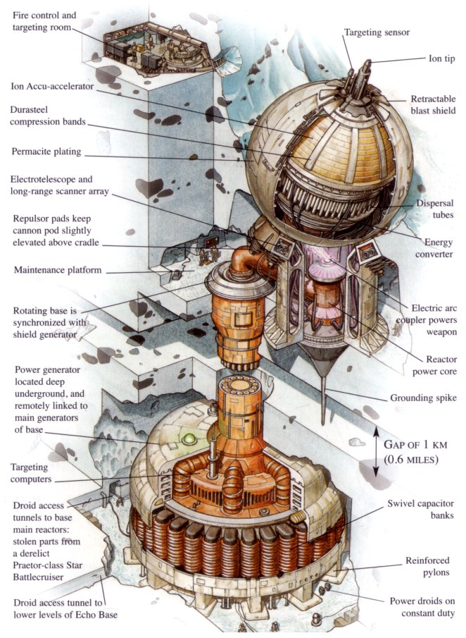

cc 2001 - 2010 Benjamin Birkenhake Digital ist besser
"The ion cannon will fire several shots to make sure that any enemy ships will be out of your flight path."
Leia Organa,
Anführerin der Rebellion gegen das Imperium
Ich hab in die letzten Tage nicht viel zur Wikileaksdiskussion gesagt. Ich hab in den letzten Tagen zu den meisten Dinge wenig gesagt. Aber jetzt muss ich mich trotz aller widerstrebender Intuition mal beteiligen, auch wenn die Worte nicht meine sind, sondern ich sie hier nur weiterreiche. Cablegate ist zuerst einmal dies: Der erste wirklich umfassende Konflikt des Cyberspace gegen die alte Welt. Der Kampf der Nerds gegen die alten Männer. Julian Assange ist kein Unternehmer, kein Journalist, kein Politiker und kein Wissenschaftler … Julian Assange ist Programmierer, er ist einer von uns, und er hat es geschafft, tagtäglich auf den Titelseiten der Zeitungen zu sein, Sondersendungen im Nachrichtenfernsehen zu bekommen und er hat es geschafft, dass demokratisch legitimiert Repräsetanten seinen Ermordung fordern. Für all das brauchte er nicht mehr eine eine Webseite, auf der er Texte veröffentlichte.
Gleichzeitig legt eine kleine Gemeinde von Aktivisten die Webseiten großer Firmen lahm, mit einem einfachen Stück Software, das passenderweise den Namen Ionenkanone trägt. Und man muss dafür nichteinmal ein Hacker sein. Man muss nicht einmal programmieren können. Jeder kann mitmachen. Entschlossener, wirkungsvoller, Widerstand, das lehrt und diese Episode, liegt in diesen Zeit nicht mehr in der Straße. Nichts passiert mehr auf der Straße. Es passiert im Netz und mitmachen kann jeder. Und sobald der Staat versucht, es dem politischen Gegener heimzuzahlen, muss er feststellen, dass sein Feind 16 Jährige sind. Der Staat bekämpft jene seiner Kinder, die er nicht schnell genug mit Ipods oder Ritalin ruhigstellen konnte.

Ich kann mir nicht helfen … aber in dieser Situation eine Position zu beziehen fällt mir denkbar einfach. Nein! Nicht "denkbar". Das hat nichts mit Denken zu tun. Ich weiß ganz einfach, auf welcher Seite ich stehe, so wie ich weiß, und schon immer wußte, wie ich atme und liebe.
Kommentare
von Ingo #
Leider auf der hier:
http://www.welt.de/debatte/kommentare/article11451144/Die-Verhaftung-bringt-Assange-zurueck-in-die-Realitaet.html
von ben_ #
Darf ich daraus folgern, dass Du dann auf dieser Seite stündest:
http://video.zeit.de/video/37090293001
http://www.zeit.de/2009/24/Internetdebatte
von fym #
Ach herje, wie lustig ist der "Artikel" bei Welt Online denn bitte schön? Danke.
von Starbuck Rogers #
I made it to 2010 and all I got from the SF Books of my youth
was a lousy dystopian government. [o_O]
von Ingo #
@ben_: Oh ja. Und Jessen lese ich sogar gerne! Natürlich bin ich in dem Fall nicht ganz seiner Meinung.
Aber zum Glück schafft sich der Springer-Qualitätsjournalismus im Internet ja gerade "App". Es kann nicht schnell genug gehen...
von Joël #
Eine DDOS-Attacke als Demonstration im Sinne der Versammlungfreiheit zu bezeichnen ist meiner Meinung nach eine gewaltige Frecheit für alle jene, die schon einmal bei der Ausübung ihrer Grundrechte Opfer von Tränengas, Schlafstöcken und schlimmeren wurden.
Ja, was da gerade passiert, ist gewaltig und spannend. Aber nicht vergessen, dass da viele dabei sind, die das for the lulz tun. Gerade sind es halt DDOS-Attacken gegen Paypal, nächste Woche mobben sie wieder eine Zwölfjährige. For the lulz halt. Ich hab Respekt vor Anon. Die Art von Respekt, die man einer Naturgewalt entgegenbringt. Aber auf deren Seite bin ich nicht, genausowenig wie auf der von Assange oder der Regierungen.
von ph #
Er hat »Schlafstöcken« gesagt … bester Euphemismus seit langem ;>